<sujeto> TIENE <predicado> CUYO VALOR ES
<objeto>


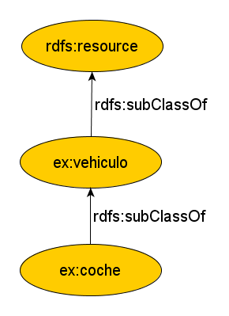
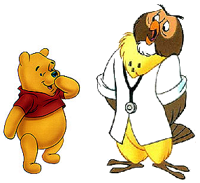
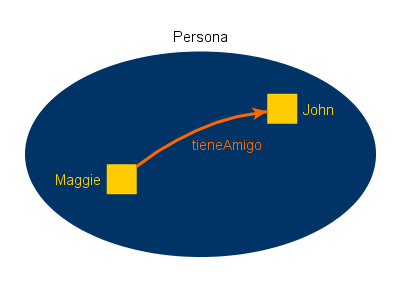
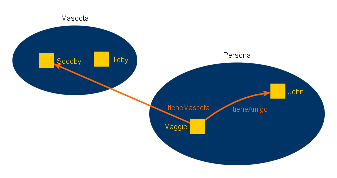
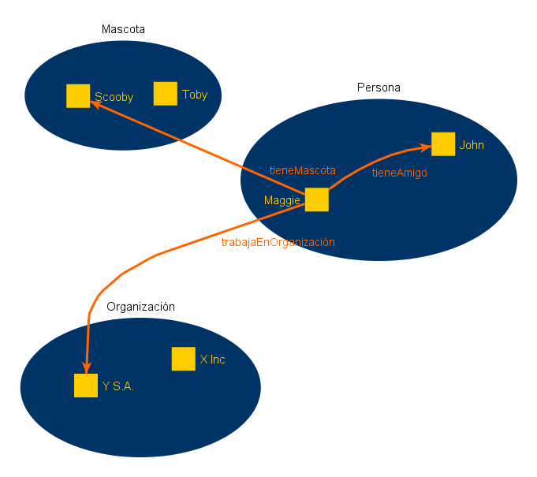
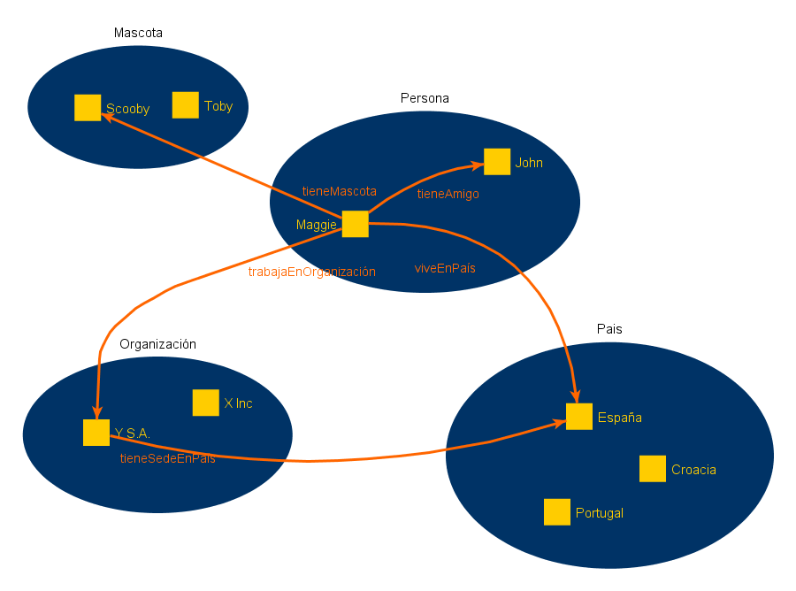
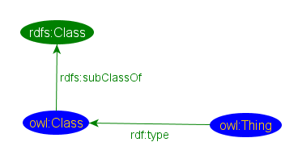
Class y Thing para diferenciar las clases y los individuos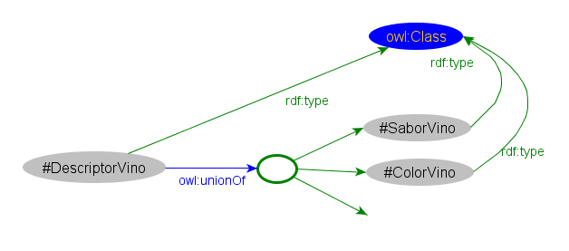
unionOfintersectionOf y
complementOfowl:disjointWith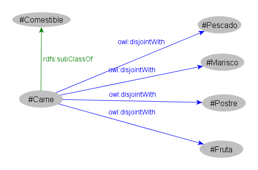
Zumo es un
LíquidoPotable que está hecho al menos por 1 pieza de fruta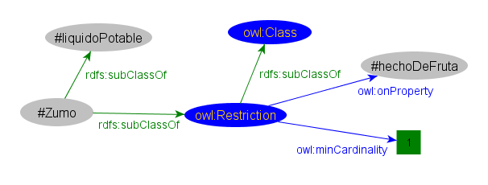
allValuesFrom,
someValuesFrom y hasValuerange) y dominio (domain)DatatypeProperty se refiere a rangos sobre literales de RDF o de tipos simples en XML SchemaequivalentClass y equivalentPropertysameAsdifferentFrom, AllDifferent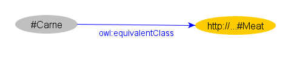
owl:importsowl:versionInfo, owl:priorVersionowl:backwardCompatibleWith, owl:incompatibleWithrdfs:label, rdfs:commentowl:DeprecatedClass y
owl:DeprecatedPropertyInfrastructura simple, flexible, extensible para representar (de forma que las máquinas lo entiendan)
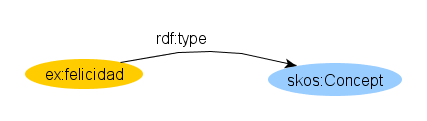
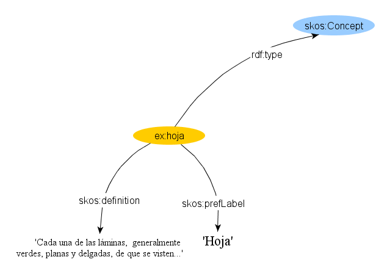
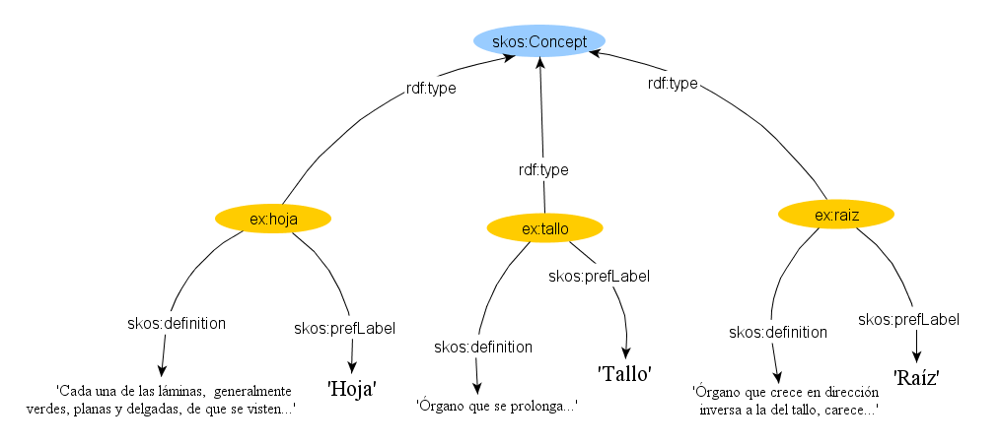
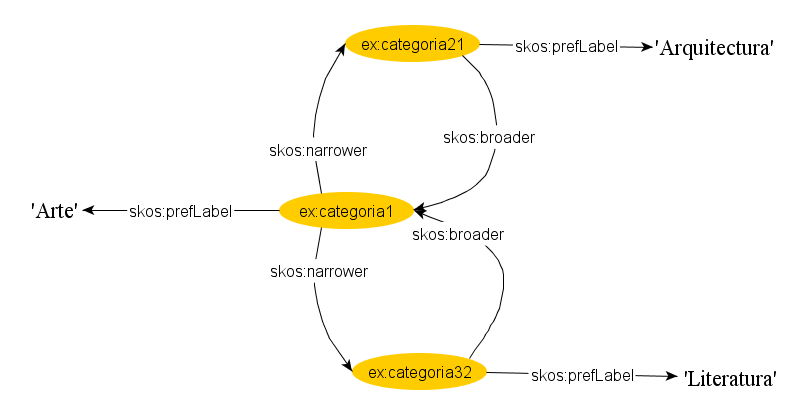
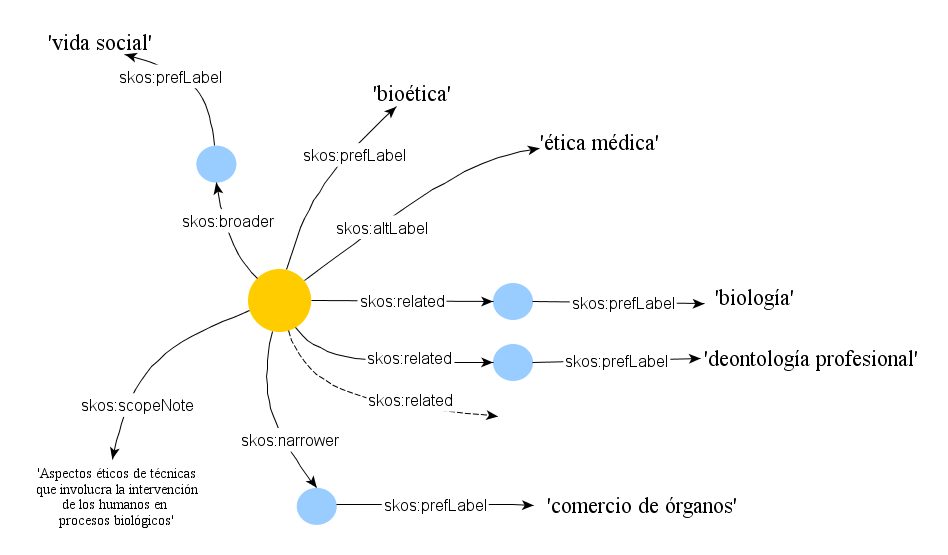
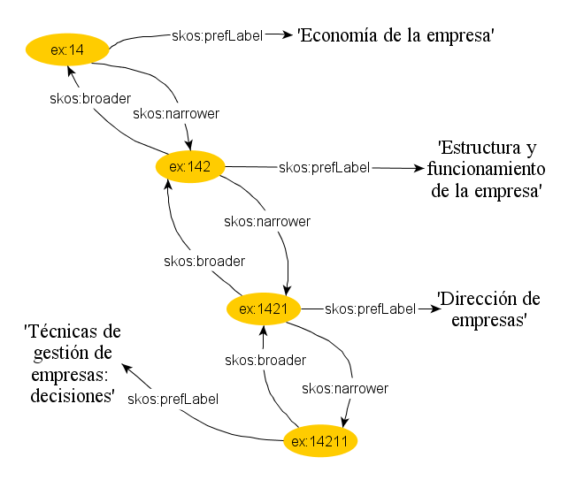
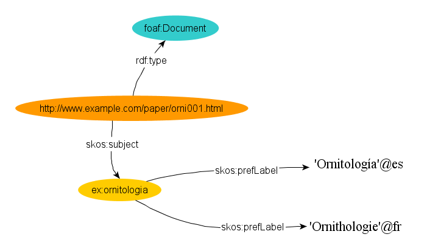
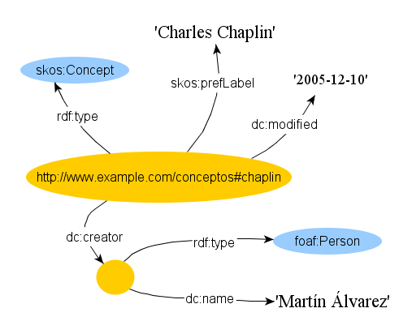
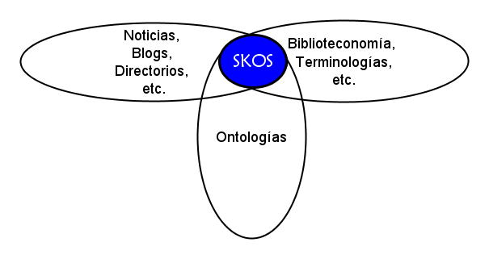